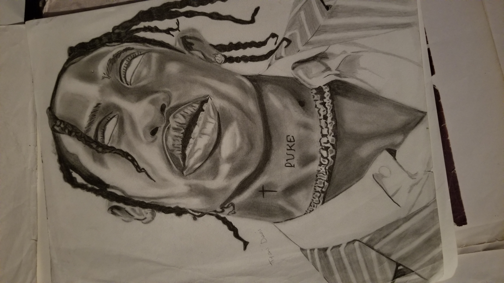
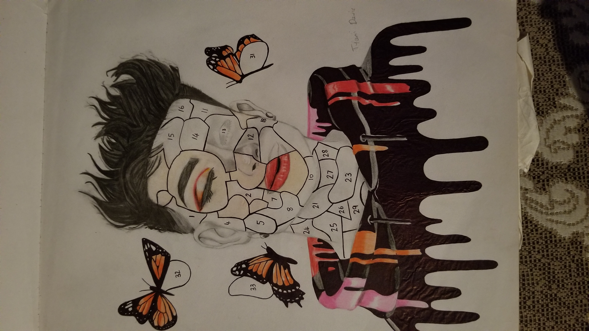
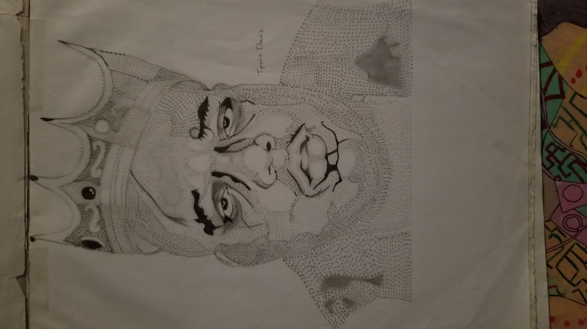
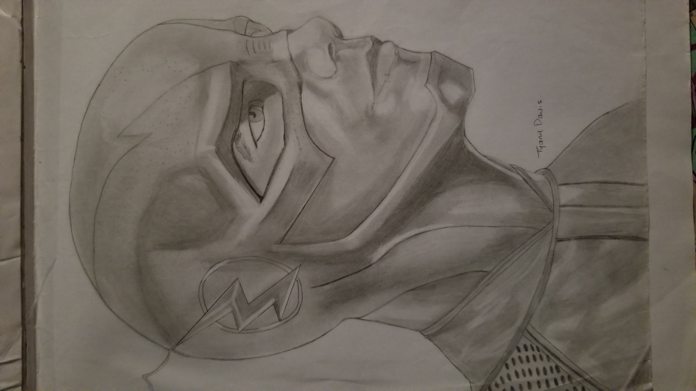
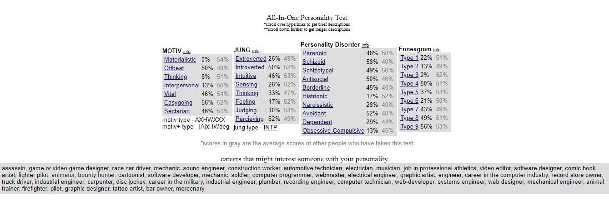

I'M TYONI

ABOUT ME:
My name is Tyoni Davis, I'm very passionate about software engineering. I am currently working towards a Degree in
Computer Science at the University of Technology Jamaica.

My life motto is "It always seems impossible until it's done."-Nelson Mandela
The traits that best describe my character are: Hard-working, Responsible and Considerate.
My Likes are Travelling, Gaming and Anime and my dislikes are cliffhangers, doing the dishes and onions. My Hobbies include Reading and Drawing
MY ART
   My Keirsey Temperament Sorter Personality Test

I believe the keirsey personality test has validity in general it provides people with a unique perspective that brings clarity on who they are, however it maybe different for some I had my family members take the test and not all the results came back accurate.
In my individual case I believe that the results that I recieved most of them were pretty accurate, especially the section where it stated all the carees that might interest someone with my personality. However most of the question were repeated and I disliked that and most questions were about science and art I had expected to see scenario like questions.